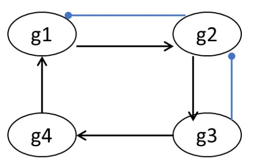

Chapter 7: Discrete dynamic models: Boolean networks #
- Consider the following reaction sequence and choose the correct statement(s) about the essentiality of the genes, g1, g2 and g3.
R1: A + B → C g1 OR g2 R2: C + A → D g2 OR g3 R3: B + D → E + F g1 AND g2 R4: A + D → E + F g1 AND g2 R5: E + F → Biomass
a. g1 is non-essential
b. g2 is non-essential
c. g3 is non-essential
d. g1, g2 and g3 are all essentials
Ans: c
- The following figure shows a simple gene regulatory network. Normal arrowheads on the edges indicate activation and circle-headed blue arrows indicate inhibition/repression. Check the correct Boolean transfer function(s). 
a. g1* = g4 AND (NOT g2)
b. g2* = g1 AND (NOT g3)
c. g3* = NOT g4
d. g2* = g3 AND (NOT g1)
Ans: a, b